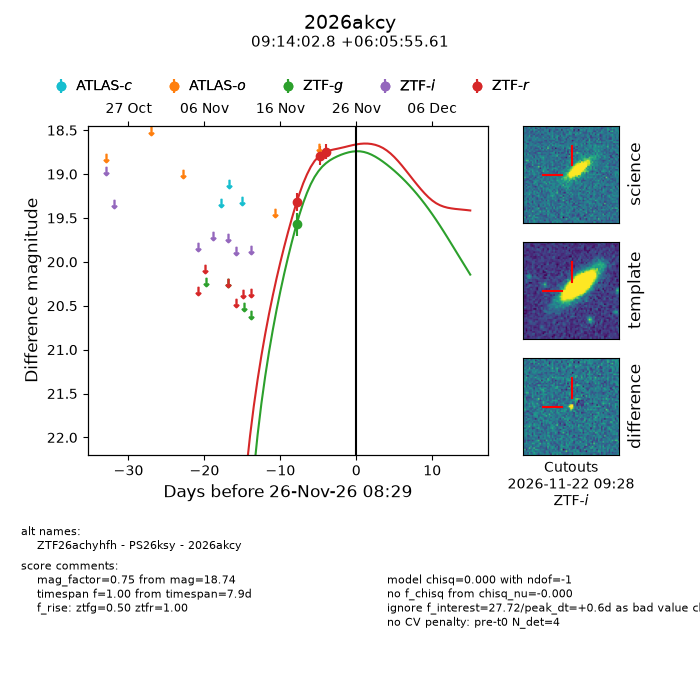
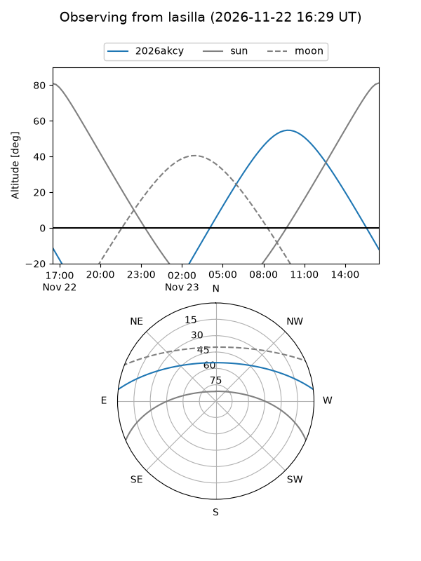
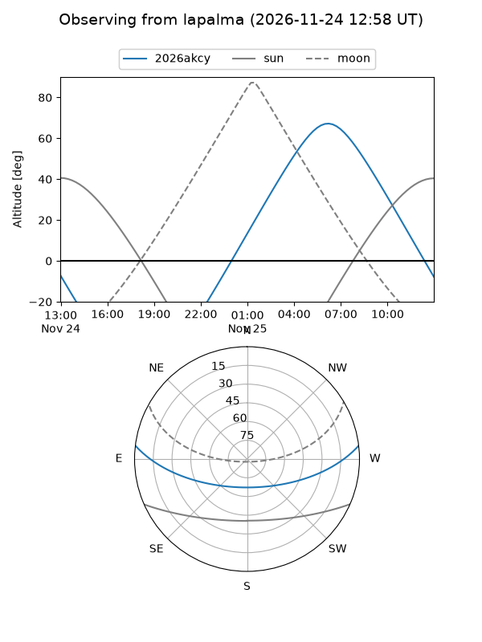
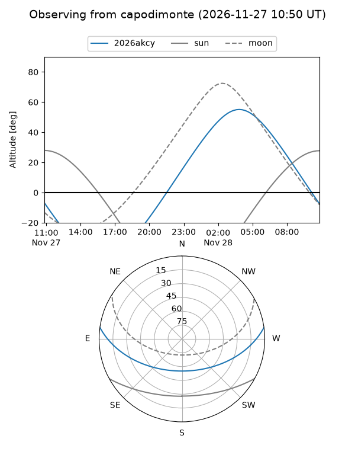
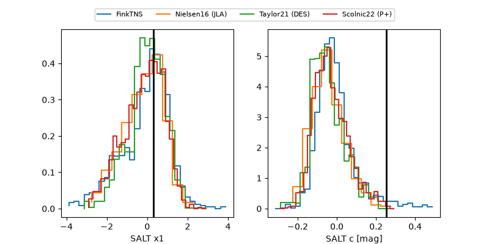

2026akcy
Target 2026akcy at 2026-11-26 08:31
Aliases and brokers:
FINK-ZTF: ztf.fink-portal.org/ZTF26achyhfh
Lasair-ZTF: lasair-ztf.lsst.ac.uk/objects/ZTF26achyhfh
ALeRCE-ZTF: alerce.online/object/ZTF26achyhfh
YSE-PZ: ziggy.ucolick.org/yse/transient_detail/2026akcy
TNS name: wis-tns.org/object/2026akcy
Direct TNS query: direct search
alt names
ZTF26achyhfh (ztf,fink_ztf)
2026akcy (tns,yse)
PS26ksy (panstarrs)
Coordinates:
equatorial (ra, dec) = 138.5118,+6.09878
equatorial (HMS+DMS) = 09:14:02.83,+06:05:55.61
galactic (l, b) = (224.7947,+34.35037)
Flags:
peak dt: +0.6
Photometry:
last ztfg=19.57, ztfr=18.74
1 ztfg, 3 ztfr detections
Lightcurve

Visibility



Additional plots
